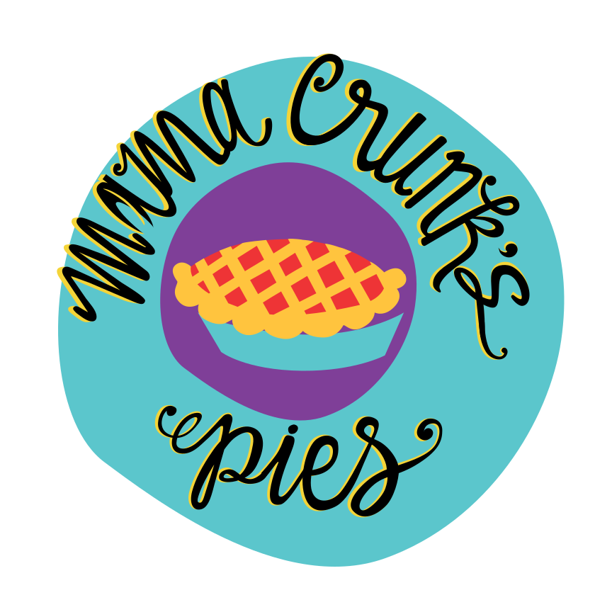

Welcome to Mama Crunk's Pie Shop!
" You are what you eat, be savory and sweet."
Mama Crunk's is the creation of Christine "Crunk" Nguyen. With years of pastry and restaurant experience, Mama Crunk's owner and chef wants to share her long-time love of pies with Chattanooga and beyond. Hand-pies of seasonal flavor will be available at Chattanooga's premier farmers markets, with full size pies available upon request.
Check out our delicious offerings!
The following list of popular flavors are available as hand-pies and full-size pies and is subject to change based on seasonal availability:
Sweet
- Salted Bourbon Caramel Apple
- Nutella and Strawberry
- Caramelized Pineapple
- Ginger Apricot
- Razzleberry
- Peach Basil
- Blackberry
- Lemon
Savory
- Chickpea Curry
- Mushroom Onion
- Vegan Shepherd Squared
Contact us for orders!
Our hand-pies are regularly available on Sundays from 11am-4pm at the Chattanooga Market (located at the Tennessee Pavilion). Full-size pies and baby pies can be special ordered by email here for pick up at the market.